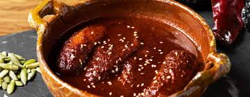

Platanos en mole
un postre exquisito y único de la cocina guatemalteca: los plátanos en mole. Esta delicia combina la dulzura de los plátanos maduros con la complejidad de una salsa de mole, creando una combinación de sabores irresistible.
Cada bocado de nuestros plátanos en mole es una experiencia gastronómica única y deliciosa que te transportará directamente a los sabores auténticos de Guatemala. Es el postre perfecto para aquellos que buscan algo un poco diferente y lleno de sabor.
Ya sea que estés buscando un postre único para disfrutar en casa o quieras sorprender a tus invitados con algo especial, nuestros plátanos en mole son la elección perfecta. ¡No pierdas la oportunidad de probar esta deliciosa combinación de sabores que seguramente te encantará!
esta disponible por tan solo Q12.00
